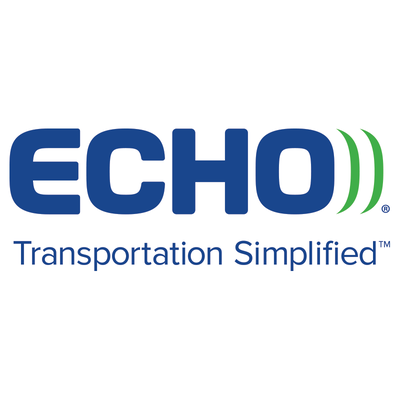
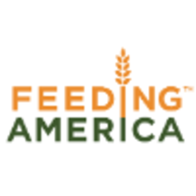
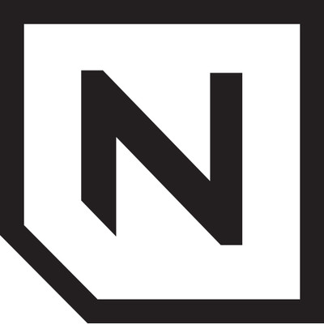

Echo Global Logistics: Software Engineer
June 2018 - Present

Feeding America
May 2017 - August 2017
- Research strategy options for sustainable mobile device management and mobile infrastructure system
- Develop SQL scripts for data conversion and analytics for implementation of Enterprise Resource Planning
System.
- Design a website to monitor site uptime of critical fundraising websites in support of Feeding America’s
Mission
Ugo Delivery: Software Consultant
November 2016 - Present
- Create ugodelivery.com, a marketing page for Ugo.
- Update the Ugo App from Swift 1 and Alamofire 1.0 to Swift 3 and Alamofire 4.0.
- Develop new ideas about improving aspects of the Website and IOS App with CEO and other partners

The Nine
April 2017 - March 2018
- Update Caboose-Rets plugin to work with new RETS service provider for a local real estate agent.
- Work on development of ruby on rails Content Management System Develop an iOS app to manage kids’ reward
system based on a points called Housepoints.